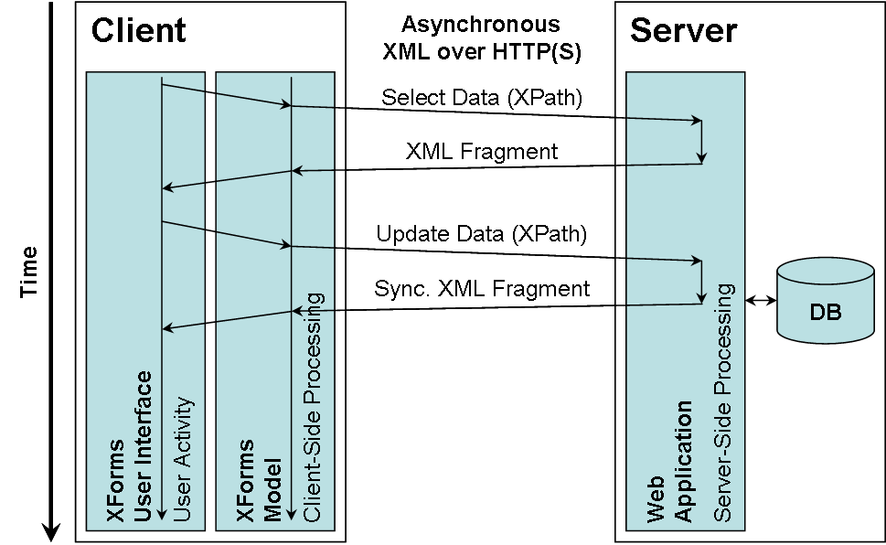

Abstract
XFormsDB is an XForms-based, open-source framework for simplifying Web application development.
XFormsDB allows software developers and even non-programmers to build useful, highly interactive multi-user Web applications quickly and easily using purely declarative languages—does not require users to write any client-side scripting or server-side programming code at all.
For more information about XFormsDB, please see Markku Laine’s Master’s Thesis presentation and Markku Laine’s Master’s Thesis (especially Chapters 1 and 8), which are available at:
- /doc/theses/Markku_Laine_2010_-_Masters_Thesis_Presentation_with_Details.pdf
- /doc/theses/Markku_Laine_2010_-_Masters_Thesis.pdf
Status of this Document
This Section describes the status of this document at the time of its publication. Other documents may supersede this document. The latest status of this document series is maintained at the Aalto University, School of Science and Technology.
Please send comments about this document to markku.laine@gmail.com.
Table of Contents
- 1 About the XFormsDB Specification
- 1.1 Document Conventions
- 1.2 Namespace for XFormsDB
- 2 The
xformsdb:instanceElement - 2.1 The
stateRequest - 2.2 The
loginRequest - 2.3 The
logoutRequest - 2.4 The
userRequest - 2.5 The
queryRequest - 2.6 The
fileRequest - 2.7 The
cookieRequest - 3 The
xformsdb:submissionElement - 4 The
xformsdb-request-errorEvent - 5 The
xformsdb:secviewElement - 6 The
xformsdb:includeElement - 7 The
xformsdb_users.xmlDocument - 8 The
xformsdb_files.xmlDocument - 9 Security Considerations
1 About the XFormsDB Specification
The XFormsDB markup language is an extension to the XForms markup language, and thus it needs to be used with the XForms markup language.
Please find more information about XForms from the following Websites:
- http://www.w3.org/MarkUp/Forms/
- http://www.w3.org/MarkUp/Forms/2003/xforms-for-html-authors.html
- http://en.wikibooks.org/wiki/XForms
1.1 Document Conventions
Throughout this document, the following namespace prefixes and corresponding namespace identifiers are used:
- ev: The XML Events namespace
http://www.w3.org/2001/xml-events(XML Events) - exforms: The eXforms’ XForms extensions namespace
http://www.exforms.org/exf/1-0(eXforms’ XForms extensions) - my: Any user defined namespace
- xforms: The XForms namespace
http://www.w3.org/2002/xforms(XForms 1.1) - xformsdb: The XFormsDB namespace
http://www.tml.tkk.fi/2007/xformsdb(1.2 Namespace for XFormsDB) - xhtml: The XHTML namespace
http://www.w3.org/1999/xhtml(XHTML 1.0) - xs: The XML Schema namespace
http://www.w3.org/2001/XMLSchema(XML Schema Part 2) - xsi: The XML Schema for instances namespace
http://www.w3.org/2001/XMLSchema-instance(XML Schema Part 1) - xxforms: The Orbeon Forms’ XForms extensions namespace
http://orbeon.org/oxf/xml/xforms(Orbeon Forms’ XForms extensions)
This is only a convention; any namespace prefix may be used in practice.
1.2 Namespace for XFormsDB
The namespace Uniform Resource Identifier (URI) for XFormsDB is http://www.tml.tkk.fi/2007/xformsdb.
2 The xformsdb:instance Element
The xformsdb:instance element is a new element that acts as a wrapper for all XFormsDB-related requests to be submitted. The benefit of using a wrapper around requests is that it enables adding new requests to the XFormsDB markup language without requiring any changes to the request submission process.
The functionality of the xformsdb:instance element is identical to the xforms:instance element with the exception that only certain parts of the instance data, depending on the type of the request, are allowed to be altered.
The different types of requests are described in detail in the following Subsections.
Usage Example
Listing 1: Definition of the xformsdb:instance element
<!-- XFormsDB request instance --> <xformsdb:instance id="xformsdb-request-instance"> <!-- Actions defined by the form author --> </xformsdb:instance>
2.1 The state Request
The state request provides a means for passing a Web application’s state information from one XHTML+XFormsDB document to another. An instance containing a Web application’s state information can be stored in an XFormsDB implementation for the duration of the session and it can be later retrieved either by the same or different XHTML+XFormsDB documents.
The xformsdb:state Element
Required child element of the xformsdb:instance element specifying only the name of the request.
Usage Example
Listing 2: Example of use of the state request for storing a Web application’s state information in an XFormsDB implementation
<!-- State instance -->
<xforms:instance id="state-instance">
<ui xmlns="">
<language>en</language>
<text-size>medium</text-size>
</ui>
</xforms:instance>
<!-- State request instance -->
<xformsdb:instance id="state-request-instance">
<xformsdb:state />
</xformsdb:instance>
<!-- Set state request submission -->
<xformsdb:submission id="set-state-request-submission"
replace="instance" instance="state-instance"
requestinstance="state-request-instance" statetype="set"
attachmentinstance="state-instance">
<!-- Actions defined by the form author -->
<xforms:action ev:event="xformsdb-request-error">
<!-- Show an error message -->
<xforms:toggle case="error-set-state-case" />
</xforms:action>
<xforms:action ev:event="xforms-submit-done">
<!-- Show a success message -->
<xforms:toggle case="success-set-state-case" />
</xforms:action>
</xformsdb:submission>
Listing 3: Example of use of the state request for retrieving a Web application’s state information from an XFormsDB implementation
<!-- State instance -->
<xforms:instance id="state-instance">
<dummy xmlns="" />
</xforms:instance>
<!-- State request instance -->
<xformsdb:instance id="state-request-instance">
<xformsdb:state />
</xformsdb:instance>
<!-- Get state request submission -->
<xformsdb:submission id="get-state-request-submission"
replace="instance" instance="state-instance"
requestinstance="state-request-instance" statetype="get">
<!-- Actions defined by the form author -->
<xforms:action ev:event="xformsdb-request-error">
<!-- Show an error message -->
<xforms:toggle case="error-get-state-case" />
</xforms:action>
<xforms:action ev:event="xforms-submit-done">
<!-- Show a success message -->
<xforms:toggle case="success-get-state-case" />
</xforms:action>
</xformsdb:submission>
Listing 4: Example of an XML response indicating a successful completion of the state request
<?xml version="1.0" encoding="UTF-8"?> <ui> <language>en</language> <text-size>medium</text-size> </ui>
2.2 The login Request
The login request enables a user to authenticate to a Web application, after which the user can access to restricted parts of the Web application. The user authentication is performed by submitting a username and password combination to an XFormsDB implementation, which checks the privileges of the user against a realm (cf. Section 6 The xformsdb_users.xml Document) and stores the user’s credentials to its credentials store for future reference upon a successful login.
The xformsdb:login Element
Required child element of the xformsdb:instance element that wraps two xformsdb:var elements; one for the username variable and the other for the password variable.
Attributes of the xformsdb:login element associated with the login request:
- datasrc
- Optional attribute specifying the ID of a data source configuration to be used by an XFormsDB implementation for connecting to the data source (realm). In the absence of this attribute, the default data source configuration of an XFormsDB implementation is used.
- doc
- Optional attribute specifying the name of an XML document for limiting authentication queries of a data source connection to a single
xformsdb_users.xmldocument. Useful when a data source connection points to a collection of documents. Default value is an empty string.
The xformsdb:var Element
Two required child elements of the xformsdb:login element; one having username and the other one having password as the value of the name attribute of this element. The values of these elements are bound to the corresponding xforms:input and xforms:secret form controls of a login form.
Attributes of the xformsdb:var element associated with the login request:
- name
- Required attribute specifying the name (
usernameorpassword) of a variable to which the form control (correspondinglyxforms:inputandxforms:secret) of a login form is bound to. Default value is an empty string.
Usage Example
Listing 5: Example of use of the login request taken from a /login.xformsdb Web page
<!-- User instance -->
<xforms:instance id="user-instance">
<dummy xmlns="" />
</xforms:instance>
<!-- Login request instance -->
<xformsdb:instance id="login-request-instance">
<xformsdb:login datasrc="realm-data-source"
doc="xformsdb_users.xml">
<xformsdb:var name="username" />
<xformsdb:var name="password" />
</xformsdb:login>
</xformsdb:instance>
<!-- Login request submission -->
<xformsdb:submission id="login-request-submission"
replace="instance" instance="user-instance"
requestinstance="login-request-instance">
<!-- Actions defined by the form author -->
<xforms:action ev:event="xformsdb-request-error">
<!-- Show an error message -->
<xforms:toggle case="error-login-case" />
</xforms:action>
<xforms:action ev:event="xforms-submit-done">
<!-- Show an incorrect message -->
<xforms:toggle if="not( exists(
instance( 'user-instance' )/@username ) )"
case="incorrect-login-case" />
<!-- Show a success message -->
<xforms:toggle if="exists(
instance( 'user-instance' )/@username )"
case="success-login-case" />
<!-- Redirect the user to /admin/index.xformsdb
upon a successful login -->
<xforms:load if="exists(
instance( 'user-instance' )/@username )"
resource="/admin/index.xformsdb" />
</xforms:action>
</xformsdb:submission>
Listing 6: Example of an XML response indicating a successful completion of the login request
<?xml version="1.0" encoding="UTF-8"?> <xformsdb:user username="administrator" roles="user admin" />
Listing 7: Example of an XML response of the login request indicating an incorrect username and password combination
<?xml version="1.0" encoding="UTF-8"?> <xformsdb:user />
2.3 The logout Request
The logout request enables a user to exit a Web application, after which the user cannot access to restricted parts of the Web application. As a result of a successful logout, an XFormsDB implementation removes the user’s credentials from its credentials store as well as all other user-related information from the session.
The xformsdb:logout Element
Required child element of the xformsdb:instance element specifying only the name of the request.
Usage Example
Listing 8: Example of use of the logout request
<!-- User instance -->
<xforms:instance id="user-instance">
<dummy xmlns="" />
</xforms:instance>
<!-- Logout request instance -->
<xformsdb:instance id="logout-request-instance">
<xformsdb:logout />
</xformsdb:instance>
<!-- Logout request submission -->
<xformsdb:submission id="logout-request-submission"
replace="instance" instance="user-instance"
requestinstance="logout-request-instance">
<!-- Actions defined by the form author -->
<xforms:action ev:event="xformsdb-request-error">
<!-- Show an error message -->
<xforms:toggle case="error-logout-case" />
</xforms:action>
<xforms:action ev:event="xforms-submit-done">
<!-- Show a success message -->
<xforms:toggle case="success-logout-case" />
<!-- Redirect the user to the home page
upon a successful logout -->
<xforms:load resource="/index.xformsdb" />
</xforms:action>
</xformsdb:submission>
Listing 9: Example of an XML response indicating a successful completion of the logout request
<?xml version="1.0" encoding="UTF-8"?> <xformsdb:user />
2.4 The user Request
The user request provides a means for extracting information about the currently logged-in user, such as username and roles the user belongs to.
The xformsdb:user Element
Required child element of the xformsdb:instance element specifying only the name of the request.
Usage Example
Listing 10: Example of use of the user request
<!-- User instance -->
<xforms:instance id="user-instance">
<dummy xmlns="" />
</xforms:instance>
<!-- User request instance -->
<xformsdb:instance id="user-request-instance">
<xformsdb:user />
</xformsdb:instance>
<!-- User request submission -->
<xformsdb:submission id="user-request-submission"
replace="instance" instance="user-instance"
requestinstance="user-request-instance">
<!-- Actions defined by the form author -->
<xforms:action ev:event="xformsdb-request-error">
<!-- Show an error message -->
<xforms:toggle case="error-user-case" />
</xforms:action>
<xforms:action ev:event="xforms-submit-done">
<!-- Show an empty message -->
<xforms:toggle if="not( exists(
instance( 'user-instance' )/@username ) )"
case="empty-user-case" />
<!-- Show a success message -->
<xforms:toggle if="exists(
instance( 'user-instance' )/@username )"
case="success-user-case" />
</xforms:action>
</xformsdb:submission>
Listing 11: Example of an XML response of the user request containing information about the currently logged-in user
<?xml version="1.0" encoding="UTF-8"?> <xformsdb:user username="administrator" roles="user admin" />
Listing 12: Example of an XML response of the user request indicating that an XFormsDB implementation does not hold a logged-in user in the session
<?xml version="1.0" encoding="UTF-8"?> <xformsdb:user />
2.5 The query Request
The query request defines a query to be executed against a data source upon a corresponding submission is dispatched. The query expression can be written either using XQuery or XPath, which are both W3C-defined standards for querying collections of XML data. In addition, the query can be parameterized, too.
XQuery expressions are used for retrieving data, creating new structures (e.g., joins), and updating data without data synchronization. XPath expressions, on the other hand, provide much simpler but less powerful means for retrieving and updating data (an XML fragment) with data synchronization.
The xformsdb:query Element
Required child element of the xformsdb:instance element that wraps necessary elements for specifying a query.
Attributes of the xformsdb:query element associated with the query request:
- datasrc
- Optional attribute specifying the ID of a data source configuration to be used by an XFormsDB implementation for connecting to the data source. In the absence of this attribute, the default data source configuration of an XFormsDB implementation is used.
- doc
- Optional attribute specifying the name of an XML document for limiting queries of a data source connection to a single XML document. Useful when a data source connection points to a collection of documents. Default value is an empty string.
The xformsdb:expression Element
Required child element of the xformsdb:query element containing a query expression either in XQuery (select and all expression types) or XPath (a combination of select and update expression types). The query expression can be written either inline in this element or to an external file referenced by the resource attribute.
Attributes of the xformsdb:expression element associated with the query request:
- resource
- Optional attribute indicating the URI of an XQuery or XPath expression. Behavior of relative URIs in links is determined by the host language, i.e., the form. Default value is an empty string.
The xformsdb:xmlns Element
Optional child element of the xformsdb:query element declaring an XML Namespace that is used in a query expression (XPath).
Attributes of the xformsdb:xmlns element associated with the query request:
- prefix
- Required attribute specifying the prefix of an XML Namespace. Default value is an empty string.
- uri
- Required attribute specifying the URI of an XML Namespace. Default value is an empty string.
The xformsdb:var Element
Optional child element(s) of the xformsdb:query element, whose value is linked to an external variable declared in an XQuery expression or used in an XPath expression. The variable in the XQuery or XPath expression must have the same name as the one specified in the name attribute of this element.
Attributes of the xformsdb:var element associated with the query request:
- name
- Required attribute specifying the name of an external variable declared in an XQuery expression or used in an XPath expression. Default value is an empty string.
The xformsdb:secvar Element
Optional child element(s) of the xformsdb:query element, which securely links the username or the space-separated list of the role names of the currently logged-in user to the external variable (username or roles, respectively) declared in an XQuery expression or used in an XPath expression. The variable in the XQuery or XPath expression must have the same name (username or roles) as the one specified in the name attribute of this element. The value of this element is not allowed to, and cannot, be altered because it is securely set on the server side by an XFormsDB implementation.
Attributes of the xformsdb:secvar element associated with the query request:
- name
- Required attribute specifying the name (
usernameorroles) of a secured, external variable (usernameorroles) declared in an XQuery expression or used in an XPath expression. Default value is an empty string.
Synchronized updates
XFormsDB provides a simple and elegant way for updating and synchronizing data to be stored in a data source. The updating process with data synchronization includes two steps. In the first step, an XML fragment is retrieved from a data source using an XPath expression pointing to the root element of the XML fragment to be updated. The retrieved XML fragment can then be altered including deleting and inserting nodes, after which in the second step, the altered XML fragment is submitted back to be stored in the data source using the same XPath expression as before. Finally, an XFormsDB implementation returns the stored XML fragment, which may contain changes made by other clients, upon a successful submission.
Figure 1: XFormsDB updating process with data synchronization
Usage Example
Listing 13: Example of use of the query request for retrieving data from a data source with XQuery
<!-- Course instance -->
<xforms:instance id="course-instance">
<dummy xmlns="" />
</xforms:instance>
<!-- Select course request instance -->
<xformsdb:instance id="select-course-request-instance">
<xformsdb:query datasrc="courses-data-source" doc="courses.xml">
<xformsdb:expression>
<![CDATA[
xquery version "1.0" encoding "UTF-8";
(: Declare namespaces :)
declare namespace studies = "http://www.tkk.fi/2009/studies";
(: Declare external variables :)
declare variable $code as xs:string external;
(: Select course :)
for $course in /root/studies:courses/studies:course
where
$course/studies:code = $code
return
$course
]]>
</xformsdb:expression>
<xformsdb:var name="code" />
</xformsdb:query>
</xformsdb:instance>
<!-- Select course request submission -->
<xformsdb:submission id="select-course-request-submission"
replace="instance" instance="course-instance"
requestinstance="select-course-request-instance"
expressiontype="select">
<!-- Actions defined by the form author -->
<xforms:action ev:event="xformsdb-request-error">
<!-- Show an error message -->
<xforms:toggle case="error-select-course-case" />
</xforms:action>
<xforms:action ev:event="xforms-submit-done">
<!-- Show a success message -->
<xforms:toggle case="success-select-course-case" />
</xforms:action>
</xformsdb:submission>
Listing 14: Example of an XML response of the query request containing the course information
<?xml version="1.0" encoding="UTF-8"?>
<studies:course>
<studies:code>T-111.5360</studies:code>
<studies:name>WWW Applications</studies:name>
<studies:credits>4</studies:credits>
<studies:overview>
The focus of the course is on new Web technologies.
</studies:overview>
</studies:course>
Listing 15: Example of use of the query request for updating data in a data source with XPath
<!-- Course instance -->
<xforms:instance id="course-instance">
<dummy xmlns="" />
</xforms:instance>
<!-- Select and update course request instance -->
<xformsdb:instance id="select-and-update-course-request-instance">
<xformsdb:query datasrc="courses-data-source" doc="courses.xml">
<xformsdb:expression>
/root/studies:courses/studies:course[ studies:code = $code ]
</xformsdb:expression>
<xformsdb:xmlns prefix="studies"
uri="http://www.tkk.fi/2009/studies" />
<xformsdb:var name="code" />
</xformsdb:query>
</xformsdb:instance>
<!-- Select course request submission -->
<xformsdb:submission id="select-course-request-submission"
replace="instance" instance="course-instance"
requestinstance="select-and-update-course-request-instance"
expressiontype="select">
<!-- Actions defined by the form author -->
<xforms:action ev:event="xformsdb-request-error">
<!-- Show an error message -->
<xforms:toggle case="error-select-course-case" />
</xforms:action>
<xforms:action ev:event="xforms-submit-done">
<!-- Show a success message -->
<xforms:toggle case="success-select-course-case" />
</xforms:action>
</xformsdb:submission>
<!-- Update course request submission -->
<xformsdb:submission id="update-course-request-submission"
replace="instance" instance="course-instance"
requestinstance="select-and-update-course-request-instance"
expressiontype="update"
attachmentinstance="course-instance">
<!-- Actions defined by the form author -->
<xforms:action ev:event="xformsdb-request-error">
<!-- Show an error message -->
<xforms:toggle case="error-update-course-case" />
</xforms:action>
<xforms:action ev:event="xforms-submit-done">
<!-- Show a success message -->
<xforms:toggle case="success-update-course-case" />
</xforms:action>
</xformsdb:submission>
Listing 16: Example of an XML response of the query request containing the updated course information
<?xml version="1.0" encoding="UTF-8"?>
<studies:course>
<studies:code>T-111.5360</studies:code>
<studies:name>WWW Applications</studies:name>
<studies:credits>4</studies:credits>
<studies:overview>
The focus of the course is on both new and upcoming Web
technologies.
</studies:overview>
</studies:course>
2.6 The file Request
The file request enables the users of a Web application to manage (select, update, insert/upload, delete, and download) files stored either within the Web application or to another location on the server. The Multipurpose Internet Mail Extensions (MIME) type of a file to be managed can be anything ranging from a Joint Photographic Experts Group (JPEG) image to a Portable Document Format (PDF) application.
The xformsdb:file Element
Required child element of the xformsdb:instance element that wraps necessary elements for performing a desired operation on one or more files.
The xformsdb:var Element
Optional child element of the xformsdb:file element, whose value (username, the space-separated list of file IDs, or the space-separated list of role names) is linked to an appropriate variable used by the file request to filter the list of files to be selected.
Attributes of the xformsdb:var element associated with the file request:
- name
- Required attribute specifying the name (
username,idsorroles) of a variable used by thefilerequest to filter the list of files to be selected. Default value is an empty string.
The xformsdb:secvar Element
Optional child element of the xformsdb:file element, whose value (username of the currently logged-in user or the roles of the currently logged-in user) is securely linked to an appropriate variable used by the file request to filter the list of files to be selected. The value of this element is not allowed to, and cannot, be altered because it is securely set on the server side by an XFormsDB implementation.
Attributes of the xformsdb:secvar element associated with the file request:
- name
- Required attribute specifying the name (
usernameorroles) of a secured variable used by thefilerequest to filter the list of files to be selected. Default value is an empty string.
Operations on files
XFormsDB provides four operations for managing files. The select operation enables retrieving the metadata about files including the URI from which the file can be downloaded. The insert, delete, and update operations, however, differ from the select operation and the idea behind them is similar to each other. In each operation, required information about the files is submitted to an XFormsDB implementation within an appropriate wrapper element (either <xformsdb:insert>, <xformsdb:delete>, or <xformsdb:update>, respectively) to ensure that an undesired operation is not executed by mistake. As a result of a successful submission, the XFormsDB implementation returns the metadata about files associated with the performed operation in the structure described in Section 8 The xformsdb_files.xml Document.
Required attributes of the xformsdb:file element(s) for each operation associated with the file request:
- select
- None. All files will be selected if filtering has not been used.
- insert
displayname,roles,filename,mediatype,filesize,comment, andcreator. Values for thefilename,mediatype, andfilesizeattributes are automatically set by anxforms:uploadelement, which is bound to the aforementioned attributes.- delete
id- update
displayname,roles,filename,mediatype,filesize,comment,creator,created,lastmodifier,lastmodified,id, anddownload. Replacing values for thefilename,mediatype, andfilesizeattributes are automatically set by anxforms:uploadelement, which is bound to the aforementioned attributes. Furthermore, replacing values for theid,lastmodified, anddownloadattributes must be ignored by an XFormsDB implementation.
Usage Example
Listing 17: Example of use of the file request for retrieving the metadata about all public files associated with a Web application
<!-- Files instance -->
<xforms:instance id="files-instance">
<dummy xmlns="" />
</xforms:instance>
<!-- Select/Update/Insert/Delete files request instance -->
<xformsdb:instance id="suid-files-request-instance">
<xformsdb:file>
<!-- All public files -->
<xformsdb:var name="roles" />
</xformsdb:file>
</xformsdb:instance>
<!-- Select files request submission -->
<xformsdb:submission id="select-files-request-submission"
replace="instance" instance="files-instance"
requestinstance="suid-files-request-instance" filetype="select">
<!-- Actions defined by the form author -->
<xforms:action ev:event="xformsdb-request-error">
<!-- Show an error message -->
<xforms:toggle case="error-select-files-case" />
</xforms:action>
<xforms:action ev:event="xforms-submit-done">
<!-- Show an empty message -->
<xforms:toggle if="count(
instance( 'files-instance' )/xformsdb:file ) = 0"
case="empty-select-files-case" />
<!-- Show a success message -->
<xforms:toggle if="count(
instance( 'files-instance' )/xformsdb:file ) > 0"
case="success-select-files-case" />
</xforms:action>
</xformsdb:submission>
Listing 18: Example of an XML response of the file request containing the metadata about all public files associated with a Web application
<?xml version="1.0" encoding="UTF-8"?>
<xformsdb:files>
<xformsdb:file displayname="API for XFormsDB 1.0" roles=""
filename="api_for_xformsdb_1-0.pdf" mediatype="application/pdf"
filesize="144941" comment="Editor’s Draft"
creator="Markku Laine" created="2009-01-27T17:04:55.310+02:00"
lastmodifier="Markku Laine"
lastmodified="2009-02-16T10:52:21.280+02:00"
id="50641f86-572e-4913-ade2-a8df24f16158"
download="http://localhost:8080/tutorial/
selectfilesbyroles.xformsdbdownload?id=50641f86-572e-4913-ade2-
a8df24f16158" />
<xformsdb:file displayname="Lecture: XFormsDB" roles=""
filename="lecture_xformsdb.pdf" mediatype="application/pdf"
filesize="728504" comment="Held on January 27, 2009"
creator="Markku Laine" created="2009-01-27T17:04:55.390+02:00"
lastmodifier="" lastmodified=""
id="f40e4173-be44-4b73-889a-2ca3ee3ae3bb"
download="http://localhost:8080/tutorial/
selectfilesbyroles.xformsdbdownload?id=f40e4173-be44-4b73-889a-
2ca3ee3ae3bb" />
</xformsdb:files>
Listing 19: Example of use of the file request for uploading files
<!-- Insert files instance -->
<xforms:instance id="insert-files-instance">
<xformsdb:insert>
<xformsdb:file displayname="" roles=""
filename="" mediatype="" filesize=""
comment="" creator="" />
<xformsdb:file displayname="" roles=""
filename="" mediatype="" filesize=""
comment="" creator="" />
</xformsdb:insert>
</xforms:instance>
<!-- Select/Update/Insert/Delete files request instance -->
<xformsdb:instance id="suid-files-request-instance">
<xformsdb:file />
</xformsdb:instance>
<!-- Insert files request submission -->
<xformsdb:submission id="insert-files-request-submission"
replace="instance" instance="insert-files-instance"
requestinstance="suid-files-request-instance" filetype="insert"
attachmentinstance="insert-files-instance">
<!-- Actions defined by the form author -->
<xforms:action ev:event="xformsdb-request-error">
<!-- Show an error message -->
<xforms:toggle case="error-insert-files-case" />
</xforms:action>
<xforms:action ev:event="xforms-submit-done">
<!-- Show a success message -->
<xforms:toggle case="success-insert-files-case" />
</xforms:action>
</xformsdb:submission>
Listing 20: Example of an XML response of the file request containing the metadata about the uploaded files
<?xml version="1.0" encoding="UTF-8"?>
<xformsdb:insert inserted="50641f86-572e-4913-ade2-a8df24f16158
f40e4173-be44-4b73-889a-2ca3ee3ae3bb">
<xformsdb:file displayname="API for XFormsDB 1.0" roles=""
filename="api_for_xformsdb_1-0.pdf" mediatype="application/pdf"
filesize="144941" comment="Editor’s Draft"
creator="Markku Laine" created="2009-01-27T17:04:55.310+02:00"
lastmodifier="" lastmodified=""
id="50641f86-572e-4913-ade2-a8df24f16158"
download="http://localhost:8080/tutorial/
selectfilesbyroles.xformsdbdownload?id=50641f86-572e-4913-ade2-
a8df24f16158" />
<xformsdb:file displayname="Lecture: XFormsDB" roles=""
filename="lecture_xformsdb.pdf" mediatype="application/pdf"
filesize="728504" comment="Held on January 27, 2009"
creator="Markku Laine" created="2009-01-27T17:04:55.390+02:00"
lastmodifier="" lastmodified=""
id="f40e4173-be44-4b73-889a-2ca3ee3ae3bb"
download="http://localhost:8080/tutorial/
selectfilesbyroles.xformsdbdownload?id=f40e4173-be44-4b73-889a-
2ca3ee3ae3bb" />
</xformsdb:insert>
2.7 The cookie Request
The cookie request provides a means for checking browser support for cookies.
The xformsdb:cookie Element
Required child element of the xformsdb:instance element specifying only the name of the request.
Usage Example
Listing 21: Example of use of the cookie request
<!-- Cookie instance -->
<xforms:instance id="cookie-instance">
<dummy xmlns="" />
</xforms:instance>
<!-- Cookie request instance -->
<xformsdb:instance id="cookie-request-instance">
<xformsdb:cookie />
</xformsdb:instance>
<!-- Cookie request submission -->
<xformsdb:submission id="cookie-request-submission"
replace="instance" instance="cookie-instance"
requestinstance="cookie-request-instance">
<!-- Actions defined by the form author -->
<xforms:action ev:event="xformsdb-request-error">
<!-- Show an error message -->
<xforms:toggle case="error-cookie-case" />
</xforms:action>
<xforms:action ev:event="xforms-submit-done">
<!-- Show an empty message -->
<xforms:toggle if="string-length(
instance( 'cookie-instance' ) ) = 0"
case="empty-cookie-case" />
<!-- Show a success message -->
<xforms:toggle if="string-length(
instance( 'cookie-instance' ) ) > 0"
case="success-cookie-case" />
</xforms:action>
</xformsdb:submission>
Listing 22: Example of an XML response of the cookie request indicating that cookies are enabled on the browser
<?xml version="1.0" encoding="UTF-8"?> <xformsdb:cookie>JSESSIONID</xformsdb:cookie>
Listing 23: Example of an XML response of the cookie request indicating that cookies are not enabled on the browser
<?xml version="1.0" encoding="UTF-8"?> <xformsdb:cookie />
3 The xformsdb:submission Element
The xformsdb:submission element is a new element that adds functionality to submit XFormsDB-related requests, such as the query requests. The requests can be submitted multiple times and at any point in the lifetime of a form.
The functionality and the processing model of the xformsdb:submission element is identical to the xforms:submission element. In addition, the element supports extension attributes, which have been described below.
Extension attributes for the xformsdb:submission element:
- requestinstance
- Required attribute specifying the
xformsdb:instanceelement containing an XFormsDB-related request to be submitted. The default value is a reference to the first occurrence of thexformsdb:instanceelement. - statetype
- Optional attribute specifying the type of the
staterequest, whose legal values are:get(default) andset. - expressiontype
- Optional attribute specifying the type of the
queryrequest, whose legal values are:all(default),select, andupdate. - filetype
- Optional attribute specifying the type of the
filerequest, whose legal values are:select(default),update,insert, anddelete. - attachmentinstance
- Optional attribute specifying the instance to be sent as an attachment along with: (1) the
staterequest (set), (2) thequeryrequest (update), and (3) thefilerequest (update,insert, anddelete). The attachment instance contains the data to be updated, inserted, or deleted—depending on the request. When the attribute is absent, defaults to the value of theinstanceattribute.
Usage Example
Listing 24: Definition of the xformsdb:submission element
<!-- XFormsDB request submission --> <xformsdb:submission id="xformsdb-request-submission" replace="instance" instance="xforms-instance" requestinstance="xformsdb-request-instance"> <!-- Actions defined by the form author --> </xformsdb:submission>
4 The xformsdb-request-error Event
The xformsdb-request-error event is a new, notification-typed event that is dispatched as an indication of a failure of an XFormsDB-related request submission and/or execution process. For instance, if an error occurs in establishing a connection to a data source or in executing a query expression. The event can be caught by, similarly to other events, XForms event handlers (XForms Actions) that use the events system defined in DOM Level 2 Events and XML Events.
The properties of the xformsdb-request-error event have the following values:
- Target element: xformsdb:submission
- Bubbles: Yes
- Cancelable: Yes
- Context info: None
- Default action: None; notification event only
In addition to the dispatched xformsdb-request-error event, a detailed error from an XFormsDB implementation is made available. Generally, the error is appended into the root node of the first child element of the xformsdb:instance element, which submitted the XFormsDB-related request. However, in case the replace attribute of the xformsdb:submission element has the value all, the error is included in an XHTML document returned after the submission to guarantee that the error can be displayed in XHTML browsers which do not necessarily support plain XML documents.
Usage Example
Listing 25: Example of a detailed error (appended) from an XFormsDB implementation
<!-- Cookie request instance -->
<xformsdb:instance id="cookie-request-instance">
<xformsdb:cookie>
<!-- Detailed error (appended) from the XFormsDB
implementation -->
<xformsdb:error>
<xformsdb:code>33001</xformsdb:code>
<xformsdb:description>
Failed to check browser support for cookies.
</xformsdb:description>
</xformsdb:error>
</xformsdb:cookie>
</xformsdb:instance>
Listing 26: Example of a detailed error (an XHTML document) from an XFormsDB implementation
<?xml version="1.0" encoding="UTF-8"?>
<xhtml:html>
<xhtml:head>
<xhtml:title>XFormsDB Error</xhtml:title>
</xhtml:head>
<xhtml:body>
<xhtml:h1>XFormsDB Error</xhtml:h1>
<xhtml:p><xhtml:b>Error code:</xhtml:b> 33001</xhtml:p>
<xhtml:p><xhtml:b>Error description:</xhtml:b> Failed to check browser support for
cookies.</xhtml:p>
</xhtml:body>
</xhtml:html>
5 The xformsdb:secview Element
The xformsdb:secview element is a new element that enables showing/hiding a part of a Web page based on the roles of a user. For instance, a Web page may show a login form for users who have not logged in yet, whereas for logged-in users the Web page may show a username and a logout button in the exact same area on the Web page.
Before an XFormsDB implementation sends a Web page to the client, it must go through all the xformsdb:secview elements on the Web page and check whether or not the current user has rights to access the content inside those particular xformsdb:secview elements. In case the current user meets all the conditions set, then, and only then, the content is exposed to the user.
In the absence of the underlying attributes, the content inside the particular xformsdb:secview element is shown only for users who have not logged in yet. A detailed decision tree diagram of the xformsdb:secview element is presented in Figure 2.
Attributes of the xformsdb:secview element:
- roles
- Optional attribute specifying the space-separated list of role names associated with the part of a Web page. A user must belong to any of the listed roles in order to access the content inside the particular
xformsdb:secviewelement on the Web page. - allroles
- Optional attribute specifying the space-separated list of role names associated with the part of a Web page. A user must belong to all of the listed roles in order to access the content inside the particular
xformsdb:secviewelement on the Web page. - noroles
- Optional attribute specifying the space-separated list of role names associated with the part of a Web page. A user must not belong to any of the listed roles in order to access the content inside the particular
xformsdb:secviewelement on the Web page. - noallroles
- Optional attribute specifying the space-separated list of role names associated with the part of a Web page. A user must not belong to all of the listed roles in order to access the content inside the particular
xformsdb:secviewelement on the Web page.
Figure 2: Decision tree diagram of the xformsdb:secview element
Usage Example
Listing 27: Definition of the xformsdb:secview elements for showing/hiding the part of a Web page
<!-- XFormsDB security view for non-logged in users -->
<xformsdb:secview>
<!-- Actions and/or UI defined by the form author -->
</xformsdb:secview>
<!-- XFormsDB security view for logged-in users having the roles:
user AND admin, but not having the role: moderator -->
<xformsdb:secview allroles="user admin" noroles="moderator">
<!-- Actions and/or UI defined by the form author -->
</xformsdb:secview>
6 The xformsdb:include Element
The xformsdb:include element is a new element that provides an inclusion mechanism to facilitate modularity. By means of the xformsdb:include element, it is possible to build large XML documents out of several well-formed XML documents. The idea behind the xformsdb:include element is similar to XInclude with the difference that it is much simpler.
The processing of the xformsdb:include elements is recursive, i.e., an included XML document can itself include another XML document.
Attributes of the xformsdb:include element:
- resource
- Required attribute indicating the URI of an external XML document to be included. Behavior of relative URIs in links is determined by the host language, i.e., the form. Default value is an empty string.
Usage Example
Listing 28: Definition of the xformsdb:include element for including a navigation
<!-- Include navigation --> <xformsdb:include resource="xinc/navigation.xinc" />
7 The xformsdb_users.xml Document
The xformsdb_users.xml document is the data source (realm) of usernames and passwords that identify valid users of a Web application, plus an enumeration of the list of roles associated with each valid user. A particular user can have any number of roles associated with their username.
Updating, inserting, and deleting users is described in Section 2.5 The query Request.
The xformsdb:users Element
Required element that wraps all xformsdb:user elements, i.e., it identifies valid users of a Web application.
The xformsdb:user Element
Required child element of the xformsdb:users element, which identifies a valid user of a Web application.
Attributes of the xformsdb:user element:
- username
- Required attribute specifying the username of a user, which is used for logging into a Web application. Each user must have a unique username within the Web application.
- password
- Required attribute specifying the password of a user, which is used for logging into a web application. A password can be either in clear text or hashed (supported cryptographic hashing algorithms: SHA-512, SHA-384, SHA-256, SHA-1, and MD-5; supported encoding methods: hex and base64).
- roles
- Required attribute specifying the space-separated list of role names associated with a user.
- anyAttribute
- Foreign attributes are allowed on this element.
Usage Example
Listing 29: Definition of the structure of the xformsdb_users.xml document
<?xml version="1.0" encoding="UTF-8"?>
<root>
<xformsdb:users>
<xformsdb:user username="administrator"
password="1224CFEC67D8695D4C9AD7B5777E61C4"
roles="user admin" />
<xformsdb:user username="student"
password="1CA18BE3E542DA8D52A9E5B4E4931FC3"
roles="user" />
</xformsdb:users>
</root>
8 The xformsdb_files.xml Document
The xformsdb_files.xml document contains the metadata about files associated with a Web application, such as display name and file size. The actual files, which are uploaded by the users of the Web application, on the other hand are stored either within the Web application or to another location on the server.
Updating, inserting, and deleting files is described in Section 2.6 The file Request.
The xformsdb:files Element
Required element that wraps all xformsdb:file elements, i.e., it contains the metadata about files associated with a Web application.
The xformsdb:file Element
Required child element of the xformsdb:files element, which contains the metadata about a file associated with a Web application.
Attributes of the xformsdb:file element:
- displayname
- Required attribute specifying the display name of a file.
- roles
- Required attribute specifying the space-separated list of role names associated with a file.
- filename
- Required attribute specifying the name (set automatically by an
xforms:uploadelement) of a file. - mediatype
- Required attribute specifying the MIME type (set automatically by an
xforms:uploadelement) of a file. - filesize
- Required attribute specifying the size (set automatically by an
xforms:uploadelement) of a file. - comment
- Required attribute specifying the free form comment associated with a file.
- creator
- Required attribute specifying the creator (username) of a file.
- created
- Required attribute specifying the creation date (generated automatically by an XFormsDB implementation) of a file in the
xs:dateTimeformat. - lastmodifier
- Required attribute specifying the last modifier (username) of a file.
- lastmodified
- Required attribute specifying the last modified date (generated automatically by an XFormsDB implementation) of a file in the
xs:dateTimeformat. - id
- Required attribute specifying the ID of a file, which is used for locating files form the file system on the server. Each file must have a unique ID (generated automatically by an XFormsDB implementation) within a Web application.
- download
- Additional attribute pointing to the URI from which a file can be downloaded. The attribute is not stored in the
xformsdb:fileelement but added automatically by an XFormsDB implementation when the metadata of the file is retrieved. In case a user does not have rights to download the file, the XFormsDB implementation must show an error message. - anyAttribute
- Foreign attributes are allowed on this element.
Usage Example
Listing 30: Definition of the structure of the xformsdb_files.xml document
<?xml version="1.0" encoding="UTF-8"?>
<root>
<xformsdb:files>
<xformsdb:file displayname="API for XFormsDB 1.0" roles=""
filename="api_for_xformsdb_1-0.pdf"
mediatype="application/pdf"
filesize="144941" comment="Editor’s Draft"
creator="Markku Laine" created="2009-01-27T17:04:55.310+02:00"
lastmodifier="Markku Laine"
lastmodified="2009-02-16T10:52:21.280+02:00"
id="50641f86-572e-4913-ade2-a8df24f16158" />
<xformsdb:file displayname="Lecture: XFormsDB" roles=""
filename="lecture_xformsdb.pdf"
mediatype="application/pdf"
filesize="728504" comment="Held on January 27, 2009"
creator="Markku Laine" created="2009-01-27T17:04:55.390+02:00"
lastmodifier="" lastmodified=""
id="f40e4173-be44-4b73-889a-2ca3ee3ae3bb" />
</xformsdb:files>
</root>
9 Security Considerations
It must be noted that for security reasons, sensitive information (e.g., query expressions and data source configurations) should never be exposed to the client in their original form. An XFormsDB implementation must take care of this issue, for example, by replacing query expressions and data source configurations with opaque reference IDs in order to prevent malicious clients from rewriting the query expressions and stealing the data source configurations.
In addition, redirecting to a (or the same) Web page is in most cases required upon a successful login and logout in order to generate a new view with up-to-date access rights for a user.
Finally, a two second pause should be applied by an XFormsDB implementation after each attempt to download a file using an incorrect Uniform Resource Locator (URL) in order to secure file downloads against malicious clients.